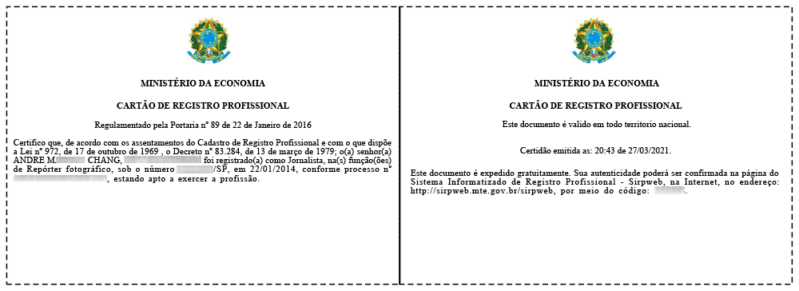

Home / About me
Born in Brazil and raised in a multicultural environment.
Professional Registration
"Registered as a Journalist, in the role of Photographic reporter", by the "Regional Superintendency of Labour and Employment" (Superintendência Regional do Trabalho e Emprego—SRTE) of the "Ministry of Labor and Employment" (Ministério do Trabalho e Emprego—MTE) of Brazil.
Professional Registration Card

Professional Registration Register
Professional Registration System
The authenticity and veracity of the information on the "professional registration card" can be confirmed in the "Professional Registration System" of the "Secretariat of Labor of the Ministry of Economy" of Brazil, if necessary. Verified: 14.05.2023.
Professional Organizations
Holder:
• 2024–2026 | International Press Card (IPC) issued by the International Federation of Journalists (IFJ), emitted in Brazil by the "National Federation of Journalists" (Federação Nacional dos Jornalistas—FENAJ).
Member:
• 2024 | "Union of Professional Journalists in the State of Sao Paulo" (Sindicato dos Jornalistas Profissionais no Estado de São Paulo—SJSP).
• 2014–2017 | "Association of Photographic and Cinematographic Reporters in the State of Sao Paulo" (Associação de Repórteres Fotográficos e Cinematográficos no Estado de São Paulo—ARFOC-SP).
Languages
First, native speaker:
• Portuguese
• Taiwanese Hokkien (Taiwanese Minnan)
• Spanish
• Mandarin Chinese
Second:
• English
Education / Courses
2024 | Agence France-Presse (AFP) Digital Investigation Techniques—Advanced
2024 | International Cooperation and Mutual Legal Assistance in Criminal Matters
2024 | Open-source Intelligence
2006 | Graduated with an associate degree in Industrial Design
2006 | Digital Photography + Creative Flash
2000 | HTML (HyperText Markup Language)
1999 | PC Hardware Technician, Windows NT 4.0, Visual FoxPro 6.0, among others.
Multicultural
Third Culture Kid/Individual (TKC/TCI): Citizen of the World